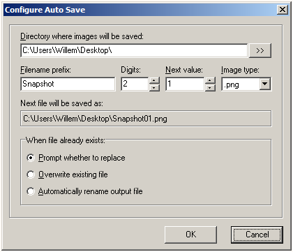
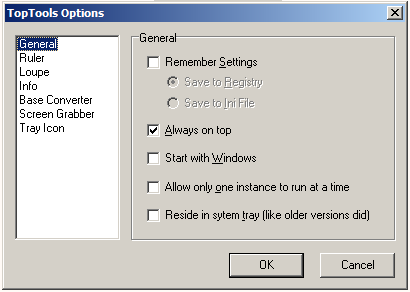

Last modified: Jul 23, 2009
Download
TopTools 4.0 (560 Kb. Zipped executable)
New in version 4.0
No installer
Since TopTools doesn't depend on external libraries or frameworks, there is no (and never really was any) reason for it to be "installed", just unzip the exe and run it.
Portable App
A portable application does not leave its files or settings on the host computer. Typically this means that the application does not write to the Windows registry and instead stores its settings in one or more configuration files (e.g. an INI file) located in its directory. (Wikipedia)
TopTools is now "portable", so you can run it from a USB-stick etc. Contrary to TopTools 3, version 4 saves settings only if you ask it to, either in the registry or in an .ini file.
Main window
- Minimize to system tray is now optional.
- Added Options button.
Screengrabber
- Grabbed view can now be printed.
- Completely rewritten for Vista, but won't work on Win95/98 ..
- Grab-screen now shows a sizable, transparent window that can be accurately positioned by using the mouse or the keyboard.
- Screen-capture can be activated with global hotkey.
-
Grabbed View can be opened in a window, saved to file, copied to clipboard or
printed.

- New Autosave features make it easy to capture a sequence of views with a minimum of keystrokes. 
Info
- Left-click and drag from the Info-window to display mouse coordinates relative to the window above which the mouse is hovering (instead of relative to the top-left of the desktop).
Loupe
- Locked View can now be copied, saved or printed.
Ruler
- Can now be made transparent (not on Win95/98).
Options dialog
- Many new options 
To do:
- Document keyboard shortcuts and other hidden features.